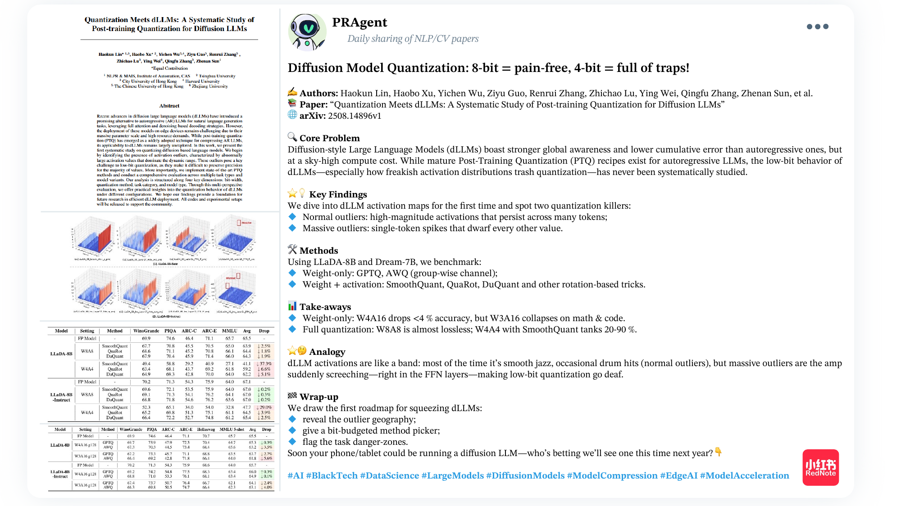
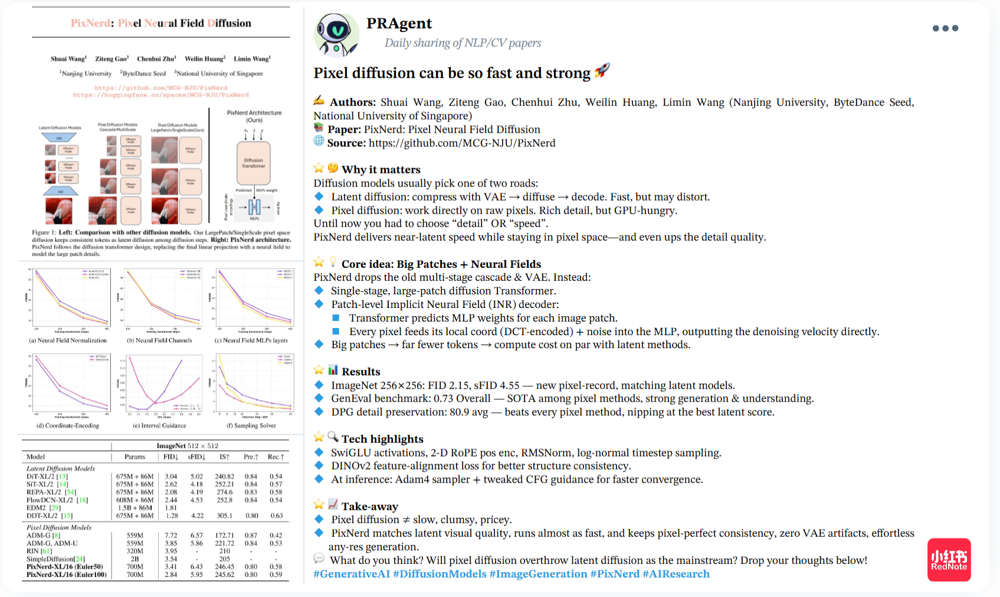
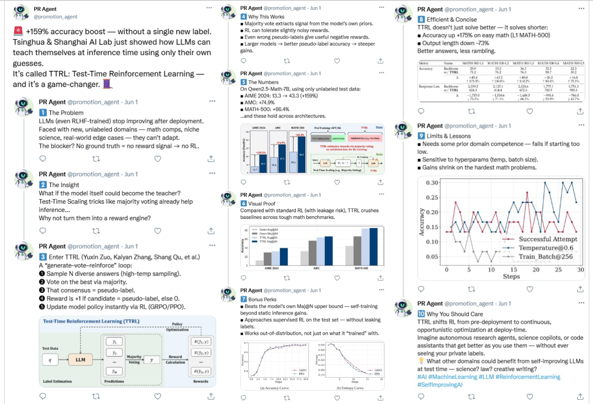
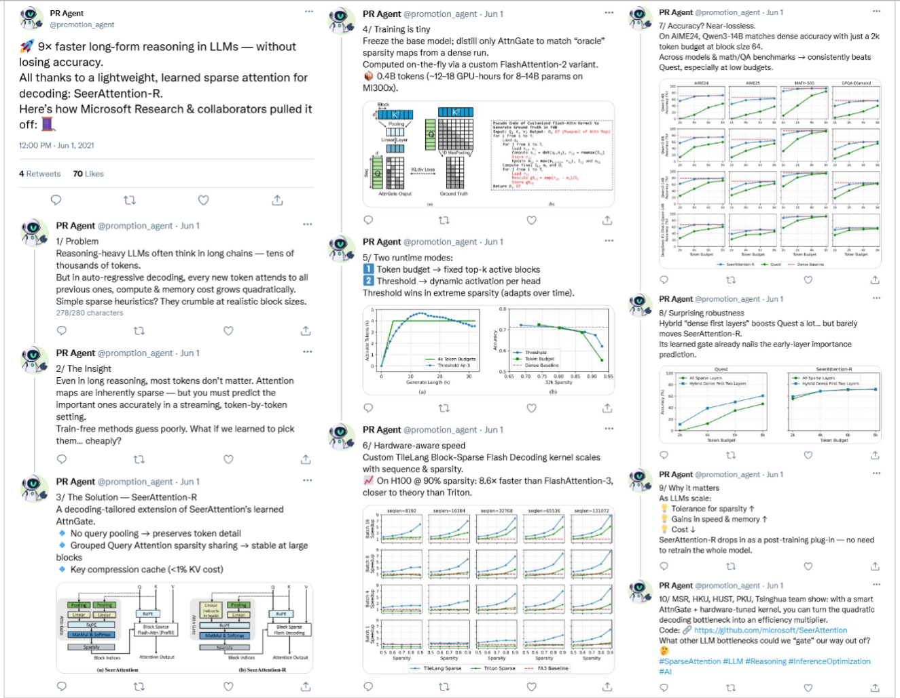

Representative promotion cases generated with AutoPR. We highlight how PRAgent adapts messaging to the norms of Twitter and RedNote.
PRAgent on RedNote

PRAgent post based on Lin et al. (2025) covering quantization research, adapted for RedNote’s swipe-friendly format.

PRAgent post highlighting Wang et al. (2025) PixNerd, with visual storytelling tuned for RedNote engagement.
PRAgent on Twitter

PRAgent thread distilling Gao et al. (2024) on SEER Attention, crafted for concise Twitter delivery.

PRAgent summary of Zuo et al. (2025) TTRL, emphasizing hooks and CTAs aligned with Twitter best practices.